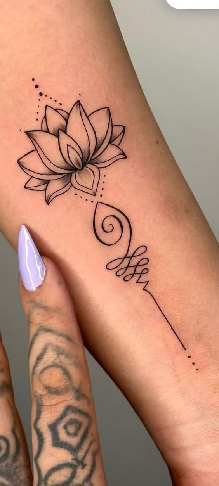
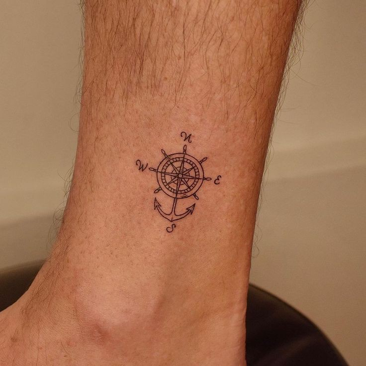
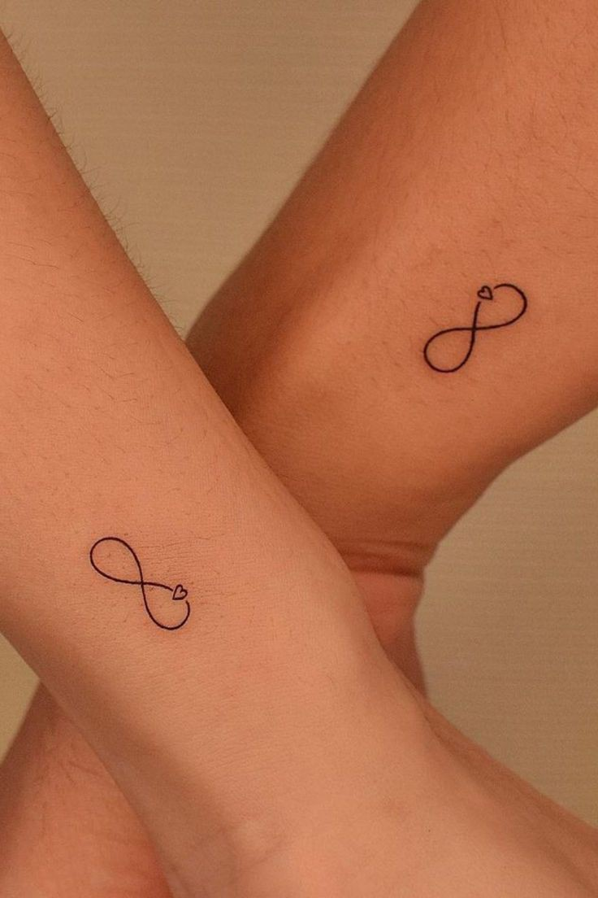

Minimalist tattoos
About Minimalist tattoos
- *Minimalist tattoos are all about simplicity and subtlety, focusing on clean lines, small designs, and often incorporating negative space
Characteristics
- Simplicity: These tattoos are characterized by their clean and straightforward designs, using minimal elements to create a strong visual impac
- Small Size: Minimalist tattoos are often small and discreet, making them a popular choice for those who prefer subtle body art.
- Thin Lines: The use of fine, thin lines is a hallmark of minimalist tattoos, creating delicate and refined images
- Negative Space: Effectively using the uninked areas around the tattoo to enhance the design's simplicity and elegance.


